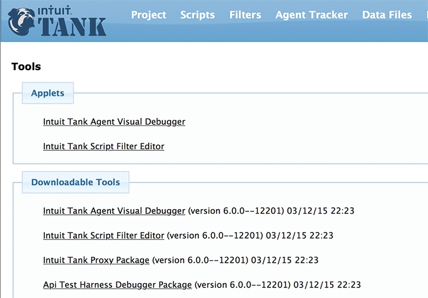
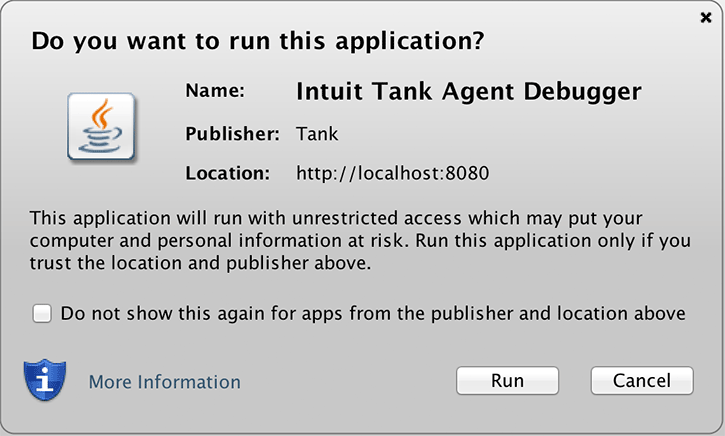

Supplemental Tools
Tank includes several external/supplemental tools that can be used in conjunction with it for a comprehensive load testing experience.
Tip: Navigating to the Tools page
Clicking the Tools tab takes the user to the main screen, which has links to downloads (AND) pages for launching the tools as java applets.
There are two sections of links for the tools, Applets and Downlaodable Tools.

Java "Applet" Tools
Applets are rich clients that are run using Java Applet technology.
They access system resources, and so they are signed using a self-signed certificate. This would mean you will be prompted to trust the applet when you launch it.

List of available Applets
Tank Agent Visual Debugger
Allows for the debugging of scripts or projects in a visual manner.
Tank Script Filter Editor
Allows for the editing and creation and testing of filter scripts (external scripts) in a visual environment.
Downloadable Tools
Downloadable Tools are meant to be run from your local machine. They require that java is installed on your local machine.
List of downloadable Tools
Tank Agent Visual Debugger
The Tank Agent Visual Debugger is downloaded as an executable jar file. It may be run by double clicking on the jar or by running from the command line. If run from the command line, you can additionally specify the url of Intuit Tank you wish to connect to. e.g. java -jar Tank-Debugger-all.jar http://my.tank/tank
Tank Script Filter Editor
The Tank Script Filter Editor allows for the editing and creation and testing of filter scripts (external scripts) in a visual environment
Tank Proxy Package
The proxy package is a zip file that contains the proxy recorder. See the readme.txt file for instructions on setup.
API Test Harness Debugger Package
Command line debugger for agent scripts.